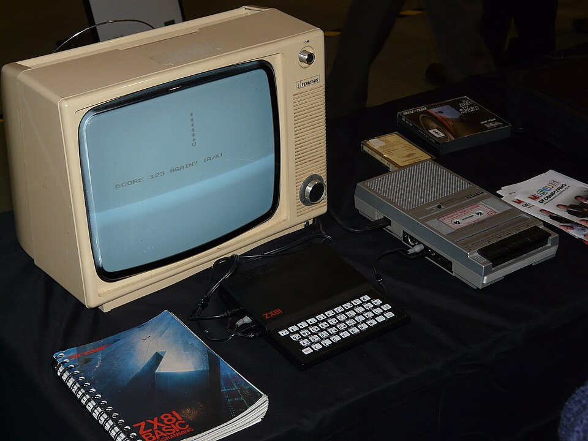

Field note · the ZX81 summer
The Dragon's War-Chant
A progress bar, a screaming cassette, a dragon. And why staying in the unknown is often worth more than any easy answer.
It started with a progress bar
One night I was fixing an old iPhone 5s. It was stuck in an activation loop, and all I could do was watch the bar crawl. Nothing to do but wait. And sitting there, out of nowhere, that bar took me back to one particular summer: I was a kid, in front of a ZX81.
Somewhere in that wait, something I'd never managed to explain to myself finally made sense. So let me tell you about that summer.
The summer I wrote a text adventure
You have to picture the machine. The ZX81 blanked its own screen while it was thinking. You'd type, and it would go dark, and you'd wait. Everything I wrote, I wrote on that.

Photo: Mike Cattell, CC BY 2.0
I spent a whole summer building a text adventure on it. I came out the other end white as a ghost, short on sleep, and when school started again everything there felt boring. For years I thought that boredom meant I was impatient. It turns out it meant the opposite.
Five minutes of screaming tape
The game didn't fit in memory, so every time the player went down a new branch, the next part had to load from cassette. If you've never heard one: it's about five minutes of fax-machine shrieking coming out of the speaker.
So I wrote into the game that the noise was the dragon's war-chant. You weren't waiting for a tape. You were hearing the dragon get ready for you.
I didn't think much of it at the time. But that's where I learned that waiting can be part of the story instead of a break from it. Most people are taught that waiting is dead time you have to get through. For me it was anticipation, with somewhere to arrive at the end. I could sit in it without flinching, and that turned out to matter for the rest of my life.
Say hello, run away, or face the dragon
Then you met the dragon, and you had three choices.
PRESS A TO SAY "HELLO, I'M LOST"
PRESS B TO RUN AWAY
PRESS C TO FACE THE DRAGON
Here's what I noticed that night, in front of the 5s, looking back over my life. The times things went wrong, the times I really failed, nearly all came from the first two choices.
A, "Hello, I'm lost": being polite, stepping aside, doing what looks nice and what's expected of me.
B, running away: leaving too early, avoiding the thing.
Almost never when I chose C and turned to face the dragon. The dragon was never what hurt me. Flinching was.
Most of my fails were saying hello, or running away.
The quiet part in the middle
While the tape loaded, you got nothing back. No percentage, no promise it wouldn't fail at the very end and send you back to the start. You had to keep the whole game in your head while the machine told you nothing at all.
That's how every big decision I've made since has felt. I pick a destination I can see clearly. I accept that I have no proof it'll work, and often it didn't. And I keep going through the stretch where there's no feedback.
And there's a part nobody else could see. For the player, the load was just a pause. For me, the one who wrote it, that dark screen was where the ideas came from. Thousands of possibilities, most of them impossible, and then the hard work of turning each one into code to see which ones would actually run. From outside it looked like a bored kid staring at a blank TV. Inside, I was building worlds.
It's still like that. When I'm locked onto a real problem, the boring everyday stuff just disappears.
And that's when it all fell into place, right there in front of the 5s and its progress bar. The silence, the dark screen, the wait with no signal: it had a name. Ambiguity. And I've always been able to stay in it longer than most people. My tolerance for ambiguity was the thread running through all of it.
The inverse of a gambler
People have always read me as a risk-taker. Sometimes as impatient, sometimes as reckless. And I get why. From the outside, I make big bets.
But a gambler bets on luck. They hand it over to chance and hope it goes their way. I do the opposite. I lock in where I want to end up, I accept there's no guarantee, and then I bet on myself finding the way there.
My faith was never that a particular path would work. It's that a path exists, and I'll be the one to find it.
There is a way. I will find it. It's a branching sequence, not a mountain to climb.
That's why people couldn't read my decisions. All they saw was the progress bar: me sitting still, looking stuck. They couldn't see the world I'd already loaded. The dragon was only ever on my screen.
On the 5s, the bar was still crawling.
So no, it was never about liking risk, and it was never impatience. It's tolerance for ambiguity, a different relationship with uncertainty than people assume. They watched me sit through the quiet middle and thought they were watching a gambler.
There is a way. There almost always is, if you're willing to stay in the unknown long enough to find it.